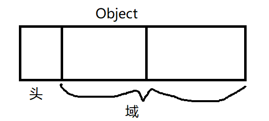

GC algorithm
条评论书中的一些稍微难理解的基础概念：
域
对象使用者在对象中可访问的部分，称为“域”

域中的数据类型大致分2种：
- 指针
- 非指针
Mutator
这个词是Edsger Dijkstra 命名的。一句话概况意思就是：它的实体就是“应用程序”。GC 就是在这个 mutator 内部精神饱满地工作着。
Mutator 实际进行的操作有2种：
- 生成对象
- 更新指针
Mutator 在进行这些操作时，会同时为应用程序的用户进行一些处理(数值计算，浏览网页，编辑文章等)。随着这些处理的逐步推进，对象间的引用关系也会“改变”。这些变化产生的垃圾，就由GC负责回收。
- 更新指针
GC标记清除算法
伪代码：
1 | Mark_swseep(){ |
标记阶段的伪代码：1
2
3
4
5
6
7
8
9
10
11
12
13
14
15Mark_phrase(){
For( r : $roots ){
Mark(*r)
}
}
Mark(obj){
If( obj.mark == FALSE ){
Obj.mark = TRUE
For( child : children(obj) ){
Mark(*child)
}
}
}
清除阶段：1
2
3
4
5
6
7
8
9
10
11sweep_phase(){
sweeping = $heap_start
while( sweeping < $heap_end ){
if( sweeping.mark == TRUE )
sweeping.mark = FALSE
else
sweeping.next = $free_list
$free_list = sweeping
sweeping += sweeping.size
}
}